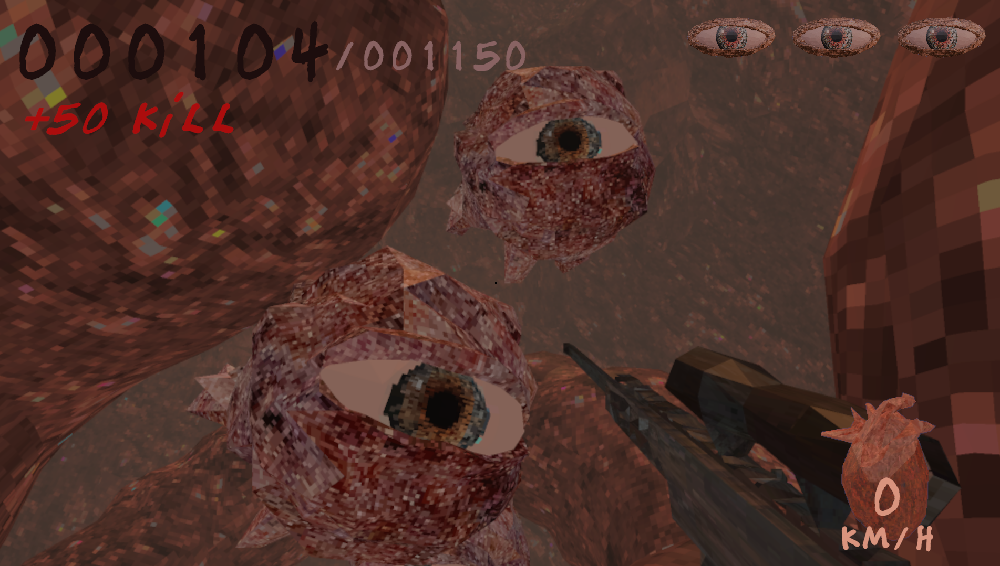

Slick to my Stomach

This project was created by myself and one other team member for the BigMode 2026 9 day game jam hosted on itch.io. This project was my first experience developing a game as part of a team and really helped broaden my skills in design, management and collaboration.
This entry into the jam is an arcade arena "trickshot" shooter in the style of a grotesque psx horror game, for this project me and my partner wanted to aim for a satisfying core game loop that fit with the Jams theme as "slick" for this we decided to do a trickshot based wave shooter game where the player scores points depending on the style and amount of tricks.
During the community voting period of the Jam our game was consistently in the first page of the most popular reaching a peak of top 5. We received very strong reviews from the community during this time also. At this time the official voting from BigModes judges have not been released.
During this project I had learned a lot about designing tight responsive controls in Unity along with experience coding custom shaders for the engine. Despite challenging me technically, I find my biggest takeaway from this Jam is instead the designing of complete satisfying mechanics that provide a deeper, more engaging time with the player. I found a new form of problem solving during this project centered instead around the psychological ways to "scratch an itch" for the player instead of the technical problems with creating an efficient robust environment they can interact with. This new challenge I found to really alter the way I approach creating experiences for the player.
Throughout development for this project, I had to learn and implement aspects not previously featured in my previous projects:
- Shader development- In this project I had to develop custom shaders in order to achieve 2 specific goals, first we wanted to achieve a PSX style "wobble" in the games assets. This style originally came from a limitation in game hardware, the original playstation couldn't run floating point positions for vertex calculations in a shape but instead relied on fixed integer positions resulting in a "wobbly" shape when the camera moved. As Unity's engine calculated this for us the best way to achieve this style was to create a custom shader that added this back in. The second issue was we wanted a "bottomless pit" in the game that the player couldn't see down, the solution I came up with for this was to create a fullscreen shader that altered the darkness of the environment depending on the Y level that gradually increased in darkness at a certain point down to total darkness at another y level, this created a gradual smooth darkness down the hole.
- Implementation of shaders in Unity- with the creation of these shaders I also had to learn more about Unity's render system and how shaders are implemented.
- Expanded more complex movement systems- This project currently has the most complex movement system I have created yet, as it has the basics of running and jumping but also includes sliding, wall jumping and most complex was backflips and front flips along with tracking for each. For this project me and my friend thought it would be cool to be able to do front and backflips, for this I didnt lock the mouse's position to between 90 and -90 degrees up and down when in the air only. This allowed the player to pull the mouse back or push it forward farther than they normally would be able. However as we still needed to be able to lock the players mouse while on the ground a simple state system along with a complex camera controller allowed me to track when the player hits the ground so I could then check the rotation of the camera while normalizing the results to create a smooth "roll" that the player would perform if outside the cameras boundaries.
- Improved game design- I feel this project expanded on game design choices more than my previous projects in order to create a more fun game. For example, the game can be very fast at times making it harder for the player to control or process the surroundings, this is made harder when enemies are involved. To combat this we implemented an impact time for when the player shoots an enemy to pause for just a moment to give the action more weight and give the player time to process.
Feel free to play the game yourself for free:
Link to the games Itch.io page.